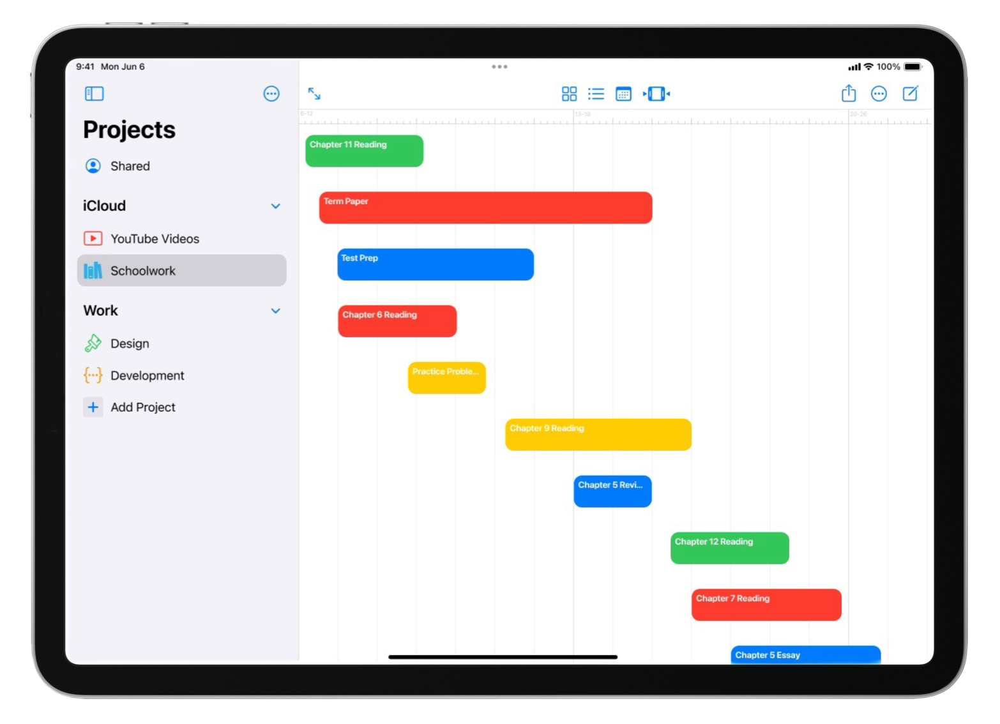
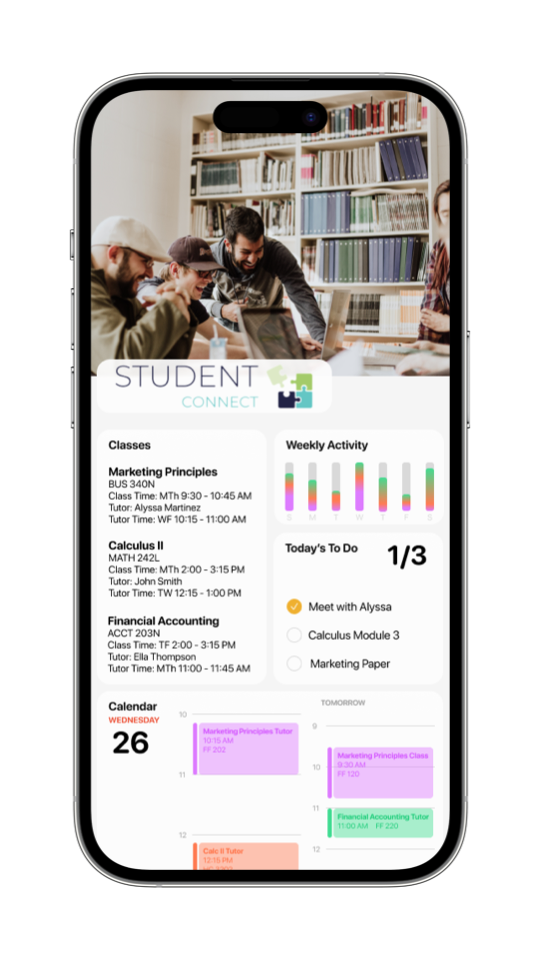
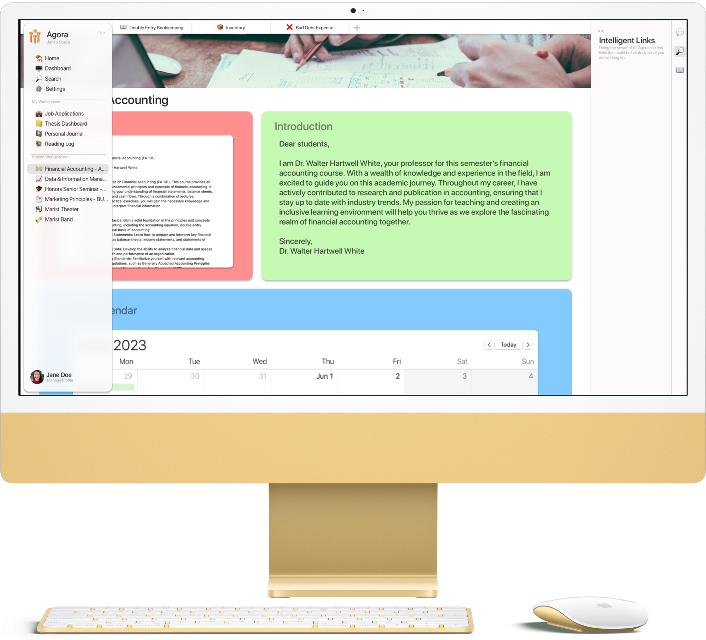

Portfolio
Projects for iPad
A More Robust Tasks App for iPadOS
The current suite of Apple’s stock productivity apps like Calendar, Notes, Reminders, and Freeform rivals that of the biggest names in the space like Notion, Good Notes, Obsidian, Cron, Fantastical, Things, and so on. I personally have been using this suite of apps to survive completing an undergrad and masters degree in a total of 4 years and I would not be able to accomplish this without them. Recent updates to the apps like categories in Reminders has unlocked so much more potential for the app and can even be used to create a Kanban style view for your reminders, unlocking some basic project management functionality for the app.
It is because of these recent updates that I feel it’s time for an overhaul to the app. Projects takes the momentum of Reminders and pushes it even further than ever before. I’ve settled on Projects for the name because anything in life can be a project such as a class, your morning routine, or a large presentation for a client. Projects takes the familiarity of Reminders, but adds some more robust options for different ways to view your tasks. A new Gantt chart view allows you to see a full timeline for your project. Other views include a gallery view, a list view, and a dedicated calendar view of this project’s tasks with the option to import those due dates directly into a calendar of your choice.
Where Projects excels is by taking the complexity out of a project management application by simplifying the process of creating new projects. On other systems you have to set up a whole new page from scratch or from a basic template, but in the process you end up spending more time setting everything up than you do actually working on your project. This process may work for a larger team with someone who is able to maintain the system without slowing down the work on the project, but for a smaller team, they might not have the capability to dedicate that much time to the process. Projects offers a more straightforward process that creates all of the views you need automatically without taking up any of your time. And don’t worry, your standard reminders lists will say just as they are. If you want to turn a list into a project, just tap the option in the menu.
Student Connect
Enabling Students to Access the Greatest System of Tutors: Themselves
Tutoring services enable students to be able to get additional assistance with learning the material they are covering in class to help students operate to the best of their ability. One problem with systems that exist today is that they’re all run through the school or through a service that can, at times, feel a little impersonal. This barrier could prevent some students from reaching out to get the help they need. Additionally, there aren’t systems in place to help keep the student on track when they aren’t with their tutor.
Student Connect aims to remove these barriers by creating a system that operates independently from a school or another service. Instead of providing the tutoring service, Student Connect leverages the power of other students, and anyone can opt in to tutoring. The main dashboard view of the app shows what classes a student is being tutored in as well as a graph that shows how much time a day they’re devoting to their studies for each of those subjects. Additionally, a to do list is shown along with a calendar showing the student when their next study session is. All of this information syncs up with the tutor as well to keep the two connected as much as possible.
With Student Connect, students can expect a better connection with their tutor. With the suite of productivity tools built into the app, students can be held accountable and tutors can ensure that their students are doing everything they can to set themselves up for success.
Agora
An Open-Source, Closed-Loop, User-Centric, Cloud-Based Learning and Research Platform
Current Learning Management Systems (LMSs) enable students and teachers to operate classes completely online. During the pandemic, nearly every single education institution relied on this technology, and most have spent a decade or more using these systems to operate. But what if the LMS did more than just allow for you to submit assignments and assign tests? What if the LMS itself facilitated more collaboration? What if the LMS became a student’s home on the internet? What if the LMS was the professor’s home for research?
Agora is a collaborative and forever free environment where we can conduct our learning, research our ideas, and remember all the lessons we learn. Forever. It is an environment that is not owned by an academic institution or corporation but by everyone, guided only by virtue and principles. Agora allows for the creation of workspaces by anyone and they can be customized to how you want it to function. These workspaces can then be shared to colleagues, students, or even fellow club members. Agora leverages technology from OpenAI, the creators of the well-known ChatGPT chatbot, to aid in your researching endeavors. Don’t like the way you worded that sentence? Just ask for some help rewording it. Need a starting point for some research? Agora can recommend some articles based on your notes. Agora aims to augment your writing and research instead of taking control away from you.
Workspaces are also highly customizable to fit the needs of whatever you are working on. With topics and resources, along with the ability to use a traditional text editor as well as markdown and LaTeX, Agora lets you get work done the way you want it. With flexibility, control, and security at the heart of Agora, you can be sure that it’s a platform you can trust.